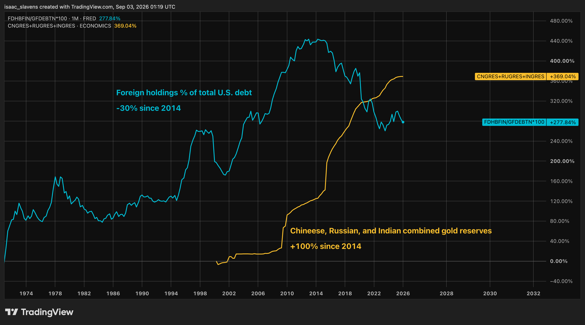
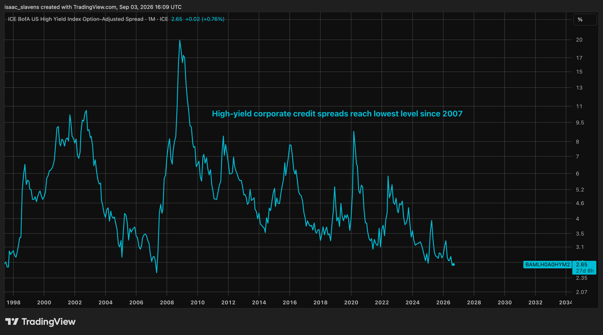
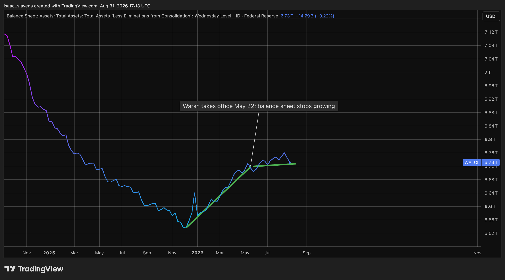
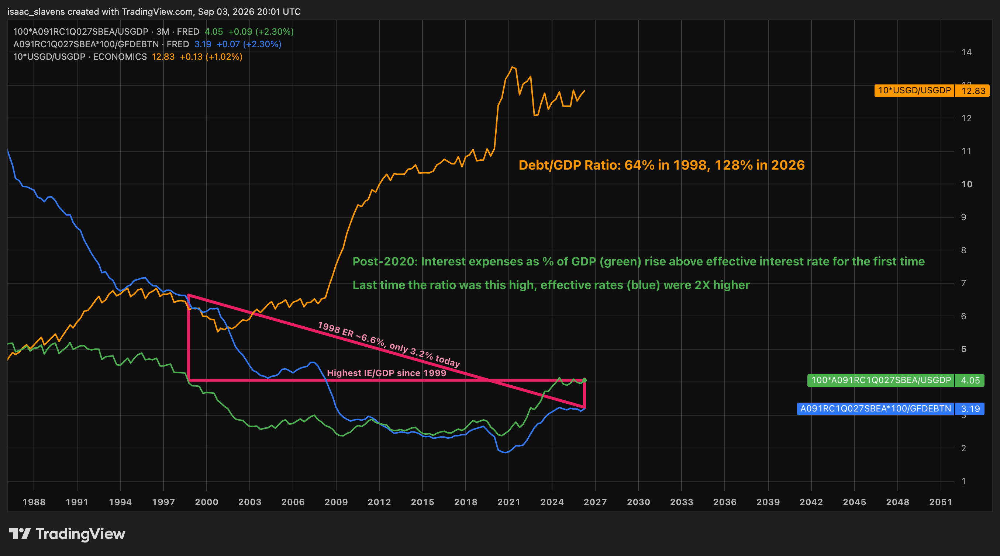
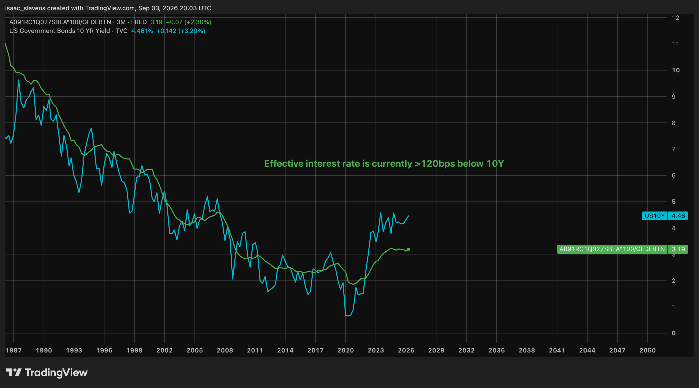

The United States government is in a difficult situation regarding its debt. The problem is that its debt is growing faster than any buyers are willing to finance it at 21st-century rates. Before looking at the long-term scope of this situation, let's address each of the major buyers whose demand for United States government bonds has simultaneously run dry in recent years.
Governments: De-dollarization
The share of American debt held in foreign countries peaked in 2014 at ~34%, and this figure now sits at ~24%. This is partially due to government debt rising faster than buyers can be found, and partially thanks to poor relations with increasingly powerful countries since the 2014 peak, notably China. It is also notable that treasuries and central banks are the primary foreign sellers. A 2025 Treasury report noted that "official investors' share of total foreign holdings of Treasuries have declined from 59 percent to 43 percent amid a slowdown in accumulation of foreign exchange reserves."1 With the majority of foreign debt sitting in private hands, it is reasonable to assume that they would be more yield-hungry than any official body.

This central bank selloff has been led by China, who held over $1.2 trillion in US Treasuries in 2018, and has since cut that number in half to $600 billion today. Much of this sell pressure was transferred to gold. China, Russia, and India have doubled their average gold reserves since 2014. Thanks to the recent bull market in gold, the total value of gold held by governments has now surpassed that of American dollars.2
Investors and Institutions: AI Bubble
Both corporations and the U.S. government are taking on record levels of debt, and it seems that the market prefers to finance the former, given that there are the lowest levels of high-yield spreads since before the financial crisis. The fact that the government is competing with corporations for funding would cause problems for those corporations in any normal environment. The logical sequence of events would be that if corporations suck up a sufficient amount of demand away from the treasury, yields rising would hurt their stock prices and act as a check toward extreme risk-on borrowing behaviour. However, not only is the extreme borrowing which results in the high treasury yields such a bullish catalyst soaking up AI speculation, but Scott Bessent has been abundantly clear that he won't let yields impact AI investment. As yields rise, it simply puts more pressure on the treasury to suppress them through buybacks and curve control, and that liquidity seems to be cancelling out any fears of disinvestment from equities.

The Federal Reserve: No more QE
This is the most worthwhile time to analyze the bond market, since not only is it the most interesting and volatile, but there is also the most authentic market behaviour. That is because the Federal Reserve is doing something extremely uncommon, but also totally unsurprising given Kevin Warsh is in charge: since he took office in May, the balance sheet has been totally flat. There hasn't been tightening or easing.

For Jerome Powell's last six months, the balance sheet had begun expanding as yields went up alongside it. Now that the rate of change is zero, there is yet another former buyer unavailable to absorb the ~$2 trillion deficit that the government takes on this year, which represents ~6% of GDP.
How Bad Really Is It?
Yields climbing in order to account for reduced demand over recent years is frustrating from a fiscal perspective, but in a healthy spending regime it could be dismissed as nothing but short-term noise. It is only after zooming out by decades that one can grasp the scope of the fiscal stress that awaits the United States, and by extension, the global economy (in which many other developed countries are in comparable situations themselves).
Ever since the inflationary spiral of the 1970s which sent rates to double digits, the effective interest rate (calculated by dividing interest expenses by total public debt) has been in a decline all the way down to ~1.9%, until 2021. Since then, it has recovered roughly to its 2009 level of 3.2%. Until 2008, the debt/GDP ratio had remained below 70%, but it now sits at 128%. Moreover, on its current growth and deficit trajectory, this figure is likely to continue growing by 1-3% per year, given this year's ~6.5% debt growth and ~5% nominal GDP growth. The chart below examines the implications of a debt/GDP ratio above 100% and showing no signs of slowing down.

Once the debt/GDP ratio broke out from 100%, it caused another curious diversion. For the first time ever, interest expenses as a percentage of GDP exceed the effective interest rate. This would not seem particularly concerning if not for the fact that this has happened at an effective rate of just 3.19%. At this effective rate, interest expenses equated to 4.05% of GDP. The last time interest expenses matched this percentage of output, the effective interest rate was 6.6%, over two times higher. It is also worth noting that effective rates remain suppressed, and will be rising significantly over the coming few years, even if yields come back down. Much of the interest being paid is still supplemented by the zero-rate era in 2020, and the 10-year yield currently sits >120bps above the current effective rate, a correlation which has always closed its gaps historically within a few years of any misalignment. Once the effective interest rate begins with a four, interest expenses could easily impose a greater burden relative to output than in the 1980s, when effective rates were above 12%.

Long-Term Outlook
Keynes was right when he said that "in the long run we are all dead." However, he probably would not have predicted, when he said that quote in 1923, that the nail in our coffin would come in the form of a fiscal stimulus package to mitigate the consequences of a recession.
When Scott Bessent and Elon Musk are mentioned in the same sentence, their disagreements will usually be the reason for doing so, particularly their April 2025 physical altercation over who ought to lead the IRS.3 This makes it particularly valuable to pay attention to what they can agree on. They have both been facing heat over the debt problems, given their roles as Treasury Secretary and (former) head of DOGE. After giving up on DOGE, Elon Musk was clear about his position on the debt issue, which was nearly identical to Bessent's. Elon has said that "Solving the deficit will require divine intervention."4 Given that he is an atheist, his optimism post-DOGE came from the hope that "AI+robots will solve the debt problem."5 In like fashion, Treasury Secretary Bessent's perspective is that the solution is "to grow the economy faster than the debt, that's how we will stabilize debt-to-GDP."6
It logically follows that Secretary Bessent is keen on suppressing yields, given that the growth solution to debt, if possible at any interest rate, will be impossible with yields above 4%. If yields can hold this level or even surpass it, the interest burden from financing existing debt would cancel out a decade of increased GDP growth from AI and robotics. Nominal GDP growth has never been sustained anywhere close to 6% or higher for any extended period since the inflationary 1970s, and the average debt growth rate since 2008 has been roughly 6% annually. Even if a new economic golden age came about in the most bullish case for AI and robotics, and 10-year yields stay at 4% or lower, the most optimistic outcome is a flat debt to GDP ratio which remains meaningfully above 100%.
The most likely outcome is not an optimistic one, because it involves a vicious cycle of monetary debasement to finance interest burdens, which drives up yields via term premiums and inflation, which increases interest burdens, and the cycle repeats. This will cause a declining level of trust and power for the United States, as well as a long-term rate of the decline in purchasing power which will affect those without assets severely. There has been some action taken already to prepare households for what happens as this struggle unfolds. Consider the Trump accounts, introduced on their website not as a way to encourage equity ownership or help families build wealth, but rather, a solution for "long-term financial security."7 In other words, those without any hard assets will be insecure in the upcoming financial environment. The most optimistic realistic solution to this crisis is ensuring that everyone has some sort of asset ownership, whether that means stocks, gold, or Bitcoin. The main issue with currency debasement isn't necessarily that prices go up, but that those without excess wealth beyond their immediate means suffer the most. The most realistic mitigation of a long-term state of inflation is ensuring broad asset ownership for all households. The proper reframing is that owning assets isn't necessarily about wealth creation, but rather, purchasing power preservation.